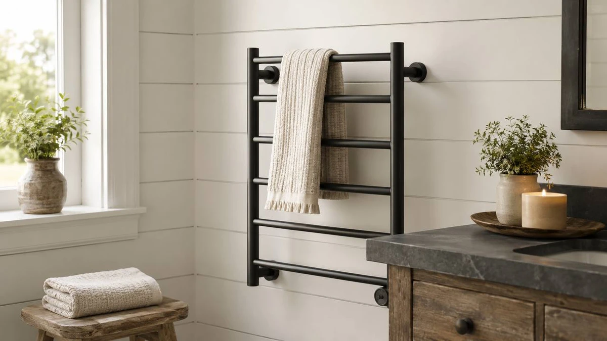

The Best Towel Warmers Under 100 (2026)
Prices and picks verified as of August 2026. Independent, reader-supported reviews.


Quick Answer
A warm towel after a shower ranks among the cheapest small luxuries you can add to a bathroom, and you don't have to spend a fortune for one. We compared seven popular models. The Sawlece 5-Bar Freestanding Towel Warmer ($148.99) wins on versatility: it needs no wall mounting and doubles as a drying rack. To stay under $100, the INNOKA 2-in-1 ($75.00) heats a full towel fast for the lowest price here.
Our pick: Sawlece 5-Bar Freestanding Towel Warmer, $148.99 Check Price on Amazon
Bottom line: our top pick is the Sawlece 5-Bar Freestanding Towel Warmer at $149.99. The best budget option is the INNOKA 2-in-1 Towel Warmer and Drying Rack at $75.
Things to Know Before You Buy
- Two main styles. Bucket-style warmers (the INNOKA, DR.PREPARE, and Keenray here) enclose a rolled towel and heat it fast; bar-style warmers (the Sawlece, APORDROUCA, and DAWEYEAL) drape towels over heated rails and double as drying racks.
- "Under $100" is realistic for compact units. The bucket models and the smaller wall-mounted warmer all land below $100. The big freestanding and multi-bar racks deliver more towel capacity but run higher.
- Freestanding vs. wall-mounted matters for renters. A freestanding unit like the Sawlece plugs in and moves with you; wall-mounted models like the APORDROUCA and DAWEYEAL need drilling but save floor space.
- Capacity is the real trade-off. A 21-23L bucket warms one towel at a time; a 5- or 9-bar rack or X-Large heated rack handles several towels but takes up more room.
- Running costs are low. All seven units are stainless steel and draw modest power, and several include timers that shut the unit off on its own.
You step out of a hot shower onto a cold floor, reach for a cold, damp towel, and accept it as one of those small daily annoyances. A towel warmer fixes that, and unlike a lot of bathroom upgrades, it doesn't require a renovation or a plumber. You plug it in, drop in a towel, and a few minutes later you have a warm, dry one waiting. The catch: "towel warmer" covers everything from a $75 bucket you roll a towel into to a wall-mounted rack that becomes a permanent fixture, and the listings rarely make the difference clear.
To sort it out, we compared seven of the most popular towel warmers across the styles people buy: freestanding bar racks, wall-mounted bars, and enclosed bucket warmers. We looked at how each one fits into a real bathroom, what it costs to live with, and where the honest trade-offs land. Prices here run from $75.00 for the INNOKA 2-in-1 up to $228.88 for the 9-bar DAWEYEAL, so you get a pick whether you want the cheapest path to a warm towel or the most rail space you can find.
Our overall pick is the Sawlece 5-Bar Freestanding Towel Warmer, because it gives you the everyday convenience of a heated rack without asking you to drill into a wall. If your only goal is the warmest towel for the least money, a bucket-style warmer like the INNOKA or DR.PREPARE gets you there faster and for less. Below we explain who each model suits, and where each one falls short.
Why You Should Trust Us
Ilane Tall wrote this guide; she covers home and bath products for Best Towel Warmers. We're a small affiliate publisher, so we make a commission when you buy through our links, but we also have no reason to push a product that won't hold up. A return or a one-star review helps no one. We read the spec sheets, compare the listings against each other, and translate them into plain recommendations you can act on.
For this roundup we focused on the things that are easy to verify and easy to get wrong: the heating style, the material, the size and capacity, and the price relative to what you get. We don't run a fake testing lab, and we won't pretend to have warmed towels in a controlled chamber. We compare these seven units side by side so the differences between a $75 bucket and a $228 nine-bar rack stand out before you spend the money.
How We Picked
We started with the towel warmers that show up most often in the under-$100 conversation and added a few higher-priced racks for context, so you can see what stepping up buys. All seven models are stainless steel, which resists the constant humidity of a bathroom far better than coated or plastic-trimmed units, and we treated that as a baseline requirement rather than a bonus.
From there we sorted by the decision that matters most: how the warmer fits your space. Bucket-style models (the INNOKA 2-in-1, the DR.PREPARE 23L, and the Keenray 21L) are the easiest to live with if you want a hot towel and have a corner to set them in. Bar-style models split into freestanding (the Sawlece 5-Bar, which moves with you) and wall-mounted (the APORDROUCA and the 9-bar DAWEYEAL, which become fixtures). We kept at least one strong option in each camp, and we excluded anything that relied on a CDN-hosted spec we couldn't tie back to the listing itself.
How We Compared
We based our comparison on the documented specs of each unit, the manufacturer's stated capacity and dimensions, and the price as listed. We weighed each warmer on four practical questions: how fast its style warms a towel, how many towels it handles at once, whether it needs installation that works in a rental, and what it costs to buy and to run.
Bucket warmers win on speed because they surround the whole towel with heat, so a 21-23L unit like the Keenray or DR.PREPARE warms a folded towel through in minutes. Bar racks trade that speed for the convenience of an open drying surface and a more built-in look. We've called out those trade-offs for each pick below, including where a model's size or installation requirement might not fit your bathroom.
Our Picks

Sawlece 5-Bar Freestanding Towel Warmer
What we like
- No wall mounting; it stands on the floor and moves with you
- Five stainless steel bars double as a full drying rack
- Works in rentals, bathrooms, and even by the pool or laundry
Flaws but not dealbreakers
- At $148.99 it costs more than the bucket-style picks
- Bars warm towels slower than an enclosed bucket
- Takes up floor space a wall-mounted unit wouldn't
| Material | Stainless steel |
| Size | 5-Bars |
The Sawlece is our overall pick because it solves the single biggest headache with towel warmers: installation. Most heated racks expect you to drill into tile and wire them into the wall, which rules them out for renters and for anyone who doesn't want a permanent fixture. The Sawlece skips all of that. It's a freestanding stainless steel unit with five heated bars that you set on the floor and plug into a standard outlet. If you move, it comes with you, and if you want it in the laundry room or by a pool one weekend, you carry it there.
The five-bar layout gives you enough rail space for a couple of bath towels plus a hand towel, and because the bars stay warm, it works as a drying rack as much as a warmer, which helps in a humid bathroom where towels stay damp. The trade-offs are price and speed. At $148.99 it's the most expensive way here to warm a single towel, and like the other bar-style warmers it heats more gently than a bucket that wraps the towel in heat. If you want the fastest, cheapest warm towel rather than an all-day drying rack, one of the bucket picks below will serve you better. For the best mix of convenience, capacity, and no-installation flexibility, the Sawlece is the one we'd point you to.

INNOKA 2-in-1 Towel Warmer and
What we like
- Lowest price here at $75.00
- 2-in-1 design warms towels plus robes and blankets
- Enclosed bucket heats the whole towel quickly
Flaws but not dealbreakers
- Warms one towel at a time, not a household's worth
- Takes up a footprint of floor or shelf space
- Doesn't double as an open drying rack
| Material | Stainless steel |
| Size | — |
If you came here because of the headline and want to spend as little as possible, the INNOKA 2-in-1 is the pick. At $75.00 it's the cheapest model in this roundup, and it's a bucket-style warmer, the format we'd steer most budget shoppers toward. Instead of draping a towel over bars and waiting, you roll the towel into the enclosed stainless steel chamber, where heat surrounds it on all sides and warms it through in minutes. For the simple goal of a hot towel waiting when you step out of the shower, this is the most direct route.
The "2-in-1" part edges it ahead of a plain bucket: it's sized and built to warm more than towels, so a robe or a small blanket works too, which makes it handy in a bedroom or nursery as well as a bathroom. The compromises come with the bucket format. It handles one item at a time rather than a stack of towels, so a busy family may find it limiting, and it takes up a footprint on the floor or a shelf rather than tucking against a wall. It also won't act as an all-day drying rack the way the Sawlece does. None of that is a dealbreaker at this price; it's the trade you make to get the fastest warm towel for the least money.

DR.PREPARE 23L Towel Warmer for
What we like
- 23L capacity swallows an oversized bath towel
- Enclosed bucket warms the whole towel in minutes
- Stays under $100 at $82.48
Flaws but not dealbreakers
- Larger bucket needs more floor or shelf room
- Still one towel at a time
- No open drying-rack function
| Material | Stainless steel |
| Size | 23L |
The DR.PREPARE is the bucket warmer to get if your towels run large. Its 23-liter chamber is the roomiest of the bucket-style picks here, which matters more than it sounds: cram an oversized bath sheet into a too-small warmer and part of it stays cold, while the extra capacity means the whole towel goes in and comes out warm all the way through. Like the other buckets, it surrounds the rolled towel with heat from a stainless steel interior, so it warms through in minutes rather than the slower draping-over-bars approach.
At $82.48 it sits under $100 while giving you more room than the cheaper INNOKA, which makes it a sensible middle choice: a little more money for a bigger chamber. The drawbacks are the predictable ones for the format. A bigger bucket needs a bigger spot, so measure your floor or shelf space before buying, and it still warms one towel at a time rather than a stack. If you have thick, oversized towels and want them hot through, though, this is the model that handles them without complaint.

Heated Towel Rack for Bathroom
What we like
- X-Large frame holds multiple full towels
- Stainless steel rails handle constant bathroom humidity
- Doubles as a heated drying rack for the whole family
Flaws but not dealbreakers
- At $189.99 it's among the priciest here
- Large footprint needs real wall or floor space
- Bar-style heating is slower than a bucket
| Material | Stainless steel |
| Size | X-Large |
This Aquatrend heated towel rack suits a busy household rather than a single user. The bucket warmers handle one towel at a time; the X-Large stainless steel frame holds several full-size towels together, so a family can hang theirs side by side and have warm, dry towels ready in the morning. In practice it works as much as a heated drying rack as a luxury, which is the more compelling reason to buy at this size: damp towels in a shared bathroom otherwise stay wet.
Be clear-eyed about what it asks for in return. At $189.99 it's one of the most expensive units in this comparison, well above the under-$100 bucket models, and its large frame needs genuine space and, depending on the mounting, a spot on the wall. The bar-style heat also runs gentler and slower than an enclosed bucket, so skip this one if you want a single towel hot in three minutes. For several people and several towels, though, the extra capacity is something the cheaper picks can't give you.

Electric Towel Warmer Wall Mounted
What we like
- Mounts on the wall and frees up all your floor space
- Sneaks under $100 at $98.99 for a permanent fixture
- Stainless steel build suited to a humid bathroom
Flaws but not dealbreakers
- Requires drilling, so not ideal for renters
- Fewer bars than the larger racks
- Bar-style heat is slower than a bucket
| Material | Stainless steel |
| Size | — |
The APORDROUCA is the under-$100 answer for anyone whose bathroom doesn't have floor to spare. It's a wall-mounted stainless steel warmer, so it lives up off the ground and out of the way, which is what a small or apartment bathroom needs. At $98.99 it slips in below the $100 mark while giving you the built-in, fixture look of a much pricier heated rack, and the stainless construction is the right call for the constant moisture a bathroom throws at it.
The catch is installation. Mounting it means drilling into the wall and committing to a spot, which makes it a poor fit for renters or anyone who'd rather keep things movable; for that crowd the freestanding Sawlece is the better buy. It also has fewer bars than the big DAWEYEAL and Aquatrend racks, so it's sized for one or two towels, not a family's worth. If you own your place, want to reclaim floor space, and would rather not cross the $100 line, though, this is the pick that checks all three boxes.

9-Bar Towel Warmer Wall-Mounted Electric
What we like
- Nine bars give the most rail space in this roundup
- Wall-mounted, so it keeps the floor clear
- Stainless steel build for a humid bathroom
Flaws but not dealbreakers
- At $228.88 it's the most expensive model here
- Requires wall mounting and drilling
- Larger footprint demands a wide stretch of wall
| Material | Stainless steel |
| Size | — |
The DAWEYEAL is the maximalist option here: a wall-mounted electric warmer with nine heated bars, the most rail space of any model in this comparison. If your bathroom often has several towels going at once, or you want bath towels, hand towels, and a washcloth all warm and drying together, this is the rack with room for it. Like the other wall-mounted units it's stainless steel and stays up off the floor, so all that capacity doesn't cost you any usable floor space.
It's also the priciest unit in the roundup at $228.88, so it only makes sense if you'll use the extra bars; for one or two towels you're paying for capacity you won't touch, and the cheaper APORDROUCA or freestanding Sawlece would serve you better. It needs wall mounting and a wide stretch of wall to land all nine bars, which rules out renters and tight layouts. For a large bathroom where towels stay in rotation, though, nothing else here gives you this much heated surface in one fixture.

Keenray Towel Warmer Luxury Towel
What we like
- Polished, higher-end look for $94.99
- 21L chamber heats a full towel through quickly
- Compact enough for most bathroom corners
Flaws but not dealbreakers
- Slightly smaller chamber than the DR.PREPARE 23L
- Warms one towel at a time
- Costs more than the basic INNOKA bucket
| Material | Stainless steel |
| Size | 21L |
The Keenray is the bucket warmer to get if you care how the thing looks sitting in your bathroom. It carries a more polished, luxury finish than the plainer budget buckets, yet at $94.99 it still lands under $100, a nice combination if you want something that feels like an upgrade without paying upgrade prices. It works like the other buckets: a 21-liter stainless steel chamber that wraps a rolled towel in heat and warms it through in minutes.
Its 21L capacity runs a touch smaller than the DR.PREPARE's 23L, so for large bath sheets the DR.PREPARE has a slight edge on room, and it costs more than the bare-bones INNOKA, so it's not the rock-bottom budget choice. It also shares the format's one-towel-at-a-time limit. If you want the speed and simplicity of a bucket warmer in a package that looks good on display and stays under $100, though, the Keenray is the most attractive way to get there.
Quick Comparison
| Product | Material | Price | Rating | Best for | Get it |
|---|---|---|---|---|---|
| Sawlece 5-Bar Freestanding Towel Warmer | Stainless steel | $148.99 | 4 | No-drill heated rack for most people | View on Amazon → |
| INNOKA 2-in-1 Towel Warmer and | Stainless steel | $75.00 | 4 | Lowest price; fast warm towel | View on Amazon → |
| DR.PREPARE 23L Towel Warmer for | Stainless steel | $82.48 | 4 | Oversized towels (23L chamber) | View on Amazon → |
| Heated Towel Rack for Bathroom | Stainless steel | $189.99 | 4 | Warming several towels at once | View on Amazon → |
| Electric Towel Warmer Wall Mounted | Stainless steel | $98.99 | 4 | Small bathrooms; saves floor space | View on Amazon → |
| 9-Bar Towel Warmer Wall-Mounted Electric | Stainless steel | $228.88 | 4 | Most rail space; large bathrooms | View on Amazon → |
| Keenray Towel Warmer Luxury Towel | Stainless steel | $94.99 | 4 | Best-looking bucket under $100 | View on Amazon → |
Can you really get a good towel warmer under $100?
Yes.
What's the difference between a bucket warmer and a bar warmer?
A bucket warmer, like the DR.PREPARE 23L or the Keenray 21L, is an enclosed cylinder you roll a towel into; it heats the whole towel at once and warms fastest.
The Competition
Three of the units here earn a spot, with clear caveats about where they lose out.
The 9-Bar DAWEYEAL ($228.88) is the best-equipped warmer here, but at the highest price in the group it only makes sense for a large, multi-towel bathroom. For one or two towels you're paying for bars you won't drape, and the freestanding Sawlece or the under-$100 APORDROUCA covers that need for far less.
The Aquatrend X-Large heated rack ($189.99) is a real help for a busy family, but it's also one of the priciest and largest options, and its bar-style heat runs slower than a bucket. If your bathroom is small, or it's only you, the capacity goes to waste and the footprint becomes a liability.
The wall-mounted models, the APORDROUCA and the DAWEYEAL, both require drilling into the wall. They're excellent if you own your home and want a permanent fixture, but for renters or anyone who'd rather not commit to a spot, they drop out of contention, which is why our top pick is the freestanding Sawlece.